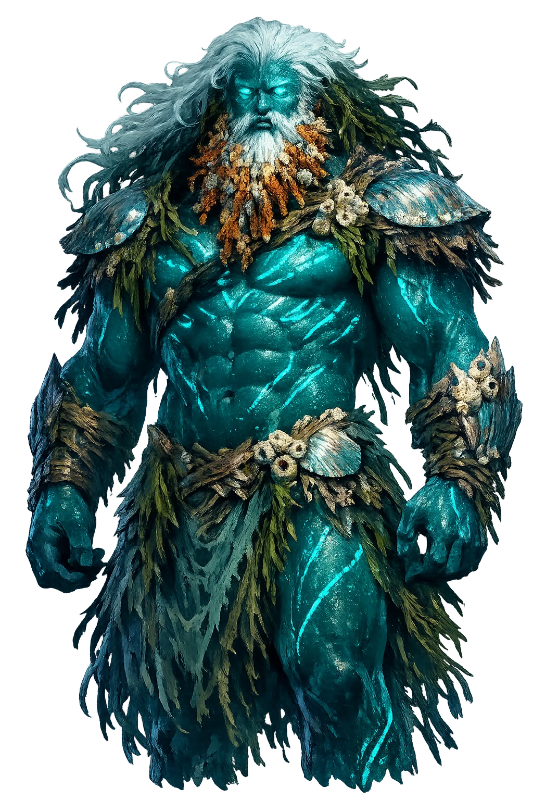

Stories of Póntos
Póntos has few myths because he is a personification rather than a character — yet his importance is genealogical. He is the primordial sea, the wet element itself, and the source of the sea's entire divine population: the kindly old Nereus, the monstrous Phorcys and Ceto, the wondrous Thaumas, and the hard-hearted Eurybia.
Hesiod's Theogony gives Póntos one of the tersest births in Greek cosmogony: 'And she [Gaia] bore Pontos, without delightful love' (131–132) — parthenogenesis, the earth producing the sea from herself with no partner, in the same breath that brings forth the Ourea, the mountain ranges. The formula matters. Póntos is not the child of a union but an excretion of the world's body, as basic as the mountains that frame the coasts. He belongs to the first generation of beings — contemporary with Ouranos, older than the Titans, older by far than Zeus — and the Theogony never grants him a personality, a spouse of his own, or a single line of dialogue. That silence is the myth. The sea, in Hesiod's scheme, is not a god to be bargained with but a substance that became a genealogy — and everything that lives in it must trace its descent back to this one parentless line.
With Gaia, Póntos fathers the entire divine population of the Mediterranean (Hesiod, Theogony 233–239). Nereus, 'the Old Man of the Sea', is 'unerring and gentle... who thinks just and kindly thoughts', and by Doris becomes father of the fifty Nereids — the friendly face of the deep. Thaumas ('wonder') fathers Iris, the rainbow-messenger, and the storm-bringing Harpies by Electra (265–269). Phorcys and Ceto, whose names mean 'seal' and 'whale', beget the Graeae, the Gorgons, and the serpent Echidna (270–336) — the monstrous line. And Eurybia, 'who had a heart of flint in her breast', marries the Titan Crius (375–377) and becomes grandmother of the winds. One primordial father, and the sea's whole character divides among his children: its kindness, its wonder, its terror, and its wind-driven violence. The genealogy is a map of what the sea can do to a sailor — rescue, marvel, devour, or drown — drawn as a family tree.
The Greeks named their greatest sea after Póntos: the Pontos Euxeinos, the 'Hospitable Sea' — and Strabo (Geography 7.3.6) records that the older name was Pontos Axeinos, the 'Inhospitable Sea', a euphemism adopted as Greek cities multiplied along its coasts from the eighth century BCE onward. The renaming is a small masterpiece of colonial rhetoric: the sea had not grown kinder — its storms still wrecked fleets, and its northern shores were still the edge of the known world — but the settlers needed the name to promise what the journey required. Miletus planted Sinope, Trapezous, and Olbia; Byzantium grew rich on its currents; the great grain route fed Athens and later Constantinople. The Pontic world became a Greek civilization in its own right, speaking its own dialect and minting its own coinage. The myth of the hospitable sea is the founding fiction of every emigrant community: the door was renamed friendly, and enough people walked through it to make the fiction come true.
Unlike Poseidôn, who held great Panhellenic sanctuaries at Onchestos, Kalaureia, and Taenarum, Póntos received no monumental cult of his own. He was worshipped locally and impersonally — invoked by sailors, fishermen, and coastal cities as the sea itself rather than as a ruling god, his name spoken in hymns alongside the specific harbor deities who held each port. The distinction the Greeks kept between Poseidôn and Póntos is one of the subtlest in their theology: Poseidôn is the sea's lord, a Zeus-like figure who storms, punishes, and can be placated with temples; Póntos is the sea's body, which cannot be placated because it cannot hear. Later Greek keeps the word as the common noun for the open sea — pontos where Homer needed a word for the water between Troy and Greece — until the personification is almost entirely absorbed into the younger god. The Greeks domesticated their seas by dividing them: a god to negotiate with, and an element to cross.
Open Water, Sea Creatures, and the Dangerous Deep
Póntos is the sea as primordial body, older than Poseidôn's rule. He is Gaia's son, the father of sea-gods and sea-monsters, the surface across which Greek life depended and beneath which Greek sailors feared to go. Where Poseidôn is the storm, Póntos is the water.
The surface of the deep, the path between cities, the barrier and highway of the Greek world.
His children include Nereus the Old Man of the Sea, Phorcys and Ceto the parents of monsters, and Thaumas father of the Harpies.
Beneath his surface lie monsters, chasms, and the unknown; sailors propitiated the sea before voyages.
The Euxine Pontos — the 'Hospitable Sea' — was named after him; Greek colonization spread across his waters.
Etymology from *pont-eh₂ 'path, crossing' — the sea as route before it was element; Beekes argues a Pre-Greek origin instead.
From the original script to the living URL
Πόντος
The name in its original Greek form. Póntos (Πόντος) is attested in the source tradition — “Sea (from πόντος)”. Its acute accents carry the full phonetic and orthographic weight of the source tradition.
pontos
Reduced to plain pontos, the name loses everything that made it specific: acute accents. What remains is an ASCII string that machines can parse but that no longer speaks with its original voice.
Póntos
The Unicode restoration recovers what ASCII flattened. Póntos restores acute accents, returning the name to its original written dignity. The domain encodes to Punycode, but the browser displays the truth.
Póntos.com → xn--pntos-0ta.com
The non-ASCII characters in Póntos are encoded while the ASCII remains visible. To the DNS, it is Punycode. To humanity, it is Póntos.
Owned, ideal, and ASCII forms of Póntos
Póntos
Restores Πόντος. The live temple domain — póntos.com.
pontos
Flattens Πόντος. The plain ASCII fallback — what DNS and legacy systems see.
How Póntos was spoken
How Póntos travels from ancient script to the modern URL
Greek Πόντος; from πόντος “sea"; the personification of the sea.
The Primordial Sea
The Unicode restoration Póntos preserves Greek stress and length; the ASCII form pontos loses these features.
Póntos is the sea before it has a mood. He is not angry or calm; he simply is — and that is why his myths are genealogies rather than stories. The Greeks crossed him, fished him, feared him, and wrote him into the family tree of every marvel and monster that lived in his water.
Enter Extended Lore